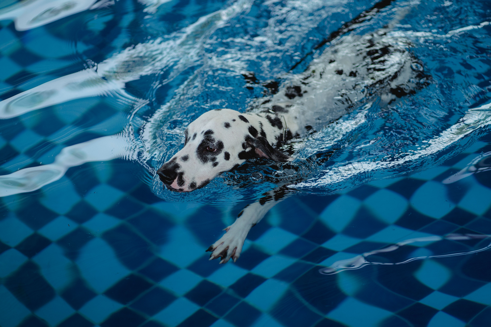
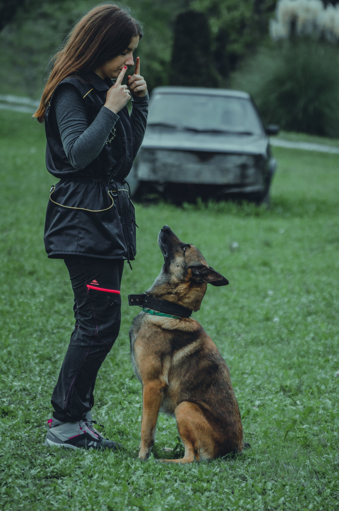

Djur, träning och rehabilitering
Mitt stora djurintresse
Som jag nämnde på startsidan har jag arbetat mycket med djur genom åren.
Mental och fysisk träning och rehabilitering är något jag verkligen tycker om att hålla på med.
Det är fantastiskt att se hur djur utvecklas och mår bättre med rätt hjälp, aktivering och träning.


Vill du läsa mer om hundar och hundträning? Kika gärna in på Svenska Kennelklubbens webbplats.
Träningsschema för veckan
| Dag | Aktivitet | Tid | Fokusområde |
|---|---|---|---|
| Måndag | Vattentrask (Rehabilitering) |
20 min | Benmuskulatur |
| Onsdag | Balansboll | 15 min | Kroppskontroll |
| Lördag | Spår i skogen | 45 min | Mental stimulans |